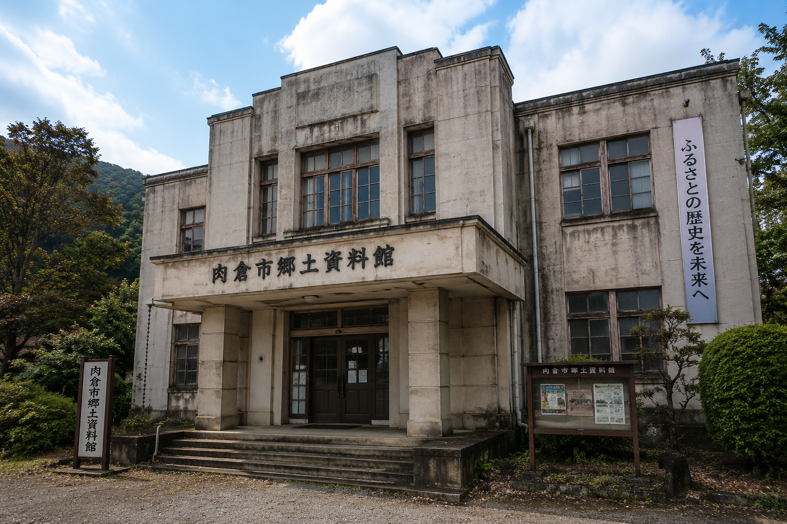
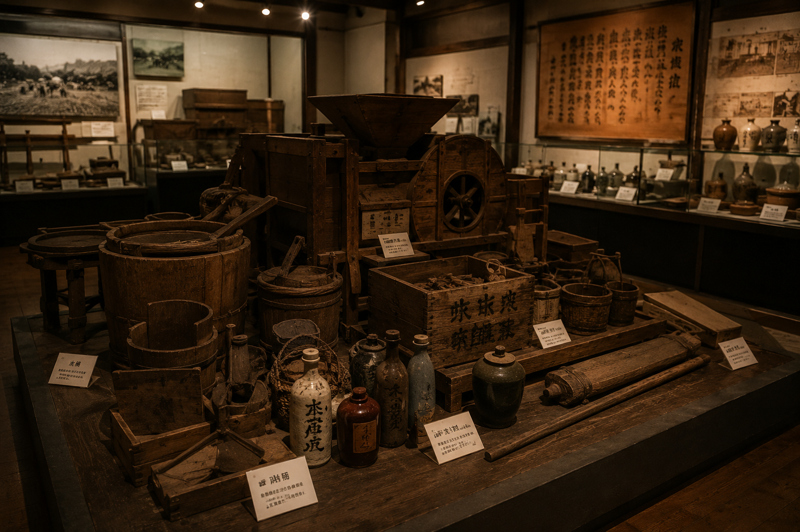

肉倉市は、山間部に位置する小さな町として始まりました。古くは「飢饉」に苦しみながらも、住民同士の強い結束により存続してきたと伝えられています。
当時の村長は、「誰一人、無駄にはしない」と記録に残しています。この言葉は、今も市の精神的支柱として受け継がれています。

Shishikura City Official Website — 〒000-0000 肉倉県肉倉市中央1丁目1番地

肉倉市は、山間部に位置する小さな町として始まりました。古くは「飢饉」に苦しみながらも、住民同士の強い結束により存続してきたと伝えられています。
当時の村長は、「誰一人、無駄にはしない」と記録に残しています。この言葉は、今も市の精神的支柱として受け継がれています。

| 展示番号 | 展示名 | 概要 |
|---|---|---|
| 001 | 肉倉村の成立 | 開拓期の農具・生活用具 |
| 002 | 大飢饉の記録 | 大正3年・昭和8年の記録文書 |
| 003 | 感謝祭の歴史 | 第一回から現在までの写真・奉納品 |
| 004 | 共同調理場の変遷 | 旧食場通りの模型・器具類 |
| 101 | 市政の歩み | 行政文書・条例原本 |
| 102 | 供給制度の成立 | 平成8年以降の行政資料 |
| 404 | （閲覧制限） | （閲覧制限あり） |
住所：肉倉市資料館通り2丁目1番地
市役所より徒歩約12分。市内循環バス「資料館前」下車すぐ。